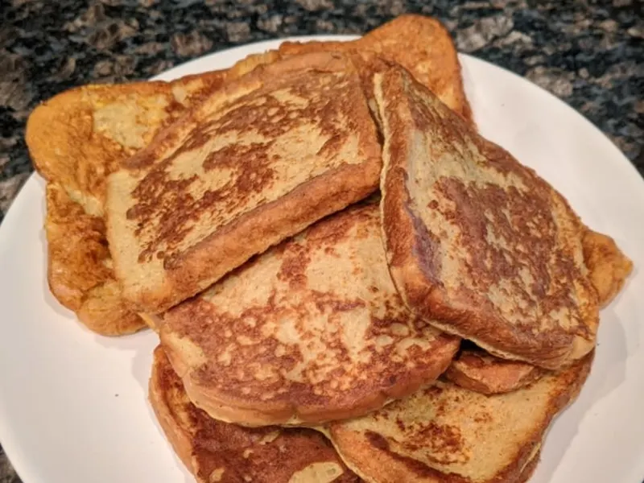

Anabolic Protein French Toast
This is the most famous recipe in the fitness industry! It has
completely changed the way we look at flexible dieting. Enjoy this masterpiece!

Ingredients:
- 4 Slices Sara Lee Delight Bread
- 322 Grams Egg Whites
- 10 mL Vanilla Extract
- 5 Grams Zero Calorie Sweetener
- 5 Grams Cinnamon
- 3 Grams Nutmeg
- 60 mL Sugar Free Maple Syrup
- Nonstick spray
Directions:
- Mix Egg Whites, Vanilla Extract, Cinnamon, and Zero Calorie
Sweetener into a large mixing bowl and mix thoroughly, until
a you have a smooth and consistent mixture.
- Take each slice of bread and dip into the Egg White
mixture until each slice has absorbed a significant
amount of liquid.
- Pre-heat a large skillet to medium/medium high heat and
spray with a light coating of nonstick spray.
- Cook each slice of bread for around 1-3 minutes each
side (cook time will vary depending on the heat of your stove).
- Remove from the skilled when french toast is a golden brown. Add
to a plate and enjoy!
Sprinkle some zero calorie sweetner or pour your favorite sugar free syrup on top!